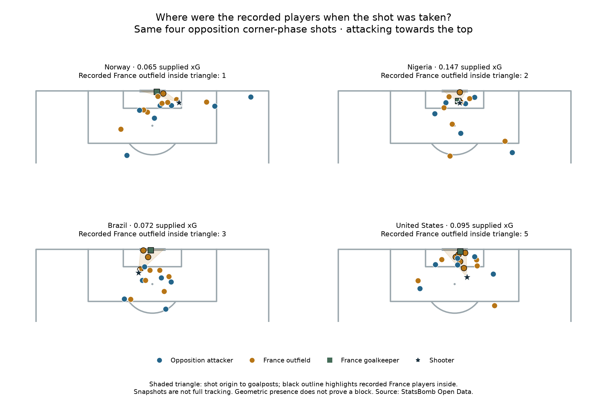

Football analyst training · Lesson 62
A snapshot adds context.
We know the shots and their supplied xG. Now we plot the recorded player positions at the moment each shot was taken. StatsBomb calls this a shot freeze frame.
How to read the picture
- Star: the shooter at the shot location.
- Blue circles: opposition attackers.
- Orange circles: France outfield players.
- Green square: France goalkeeper.
- Shaded triangle: from the shot location to the two goalposts.

The completed assignment
We counted recorded French outfield player centres inside or on the triangle:
- Norway shot: 1.
- Nigeria shot: 2.
- Brazil shot: 3.
- USA shot: 5.
The goalkeeper is counted separately. All four recorded French goalkeeper positions are inside their respective triangles.
The diagram is flat. It does not show body size, jumping, ball height, reaction time or movement. Three of these four attempts were headers. A snapshot also does not tell us who was assigned to mark whom.
One important data detail
teammate = True → teammate of the shooter teammate = False → opponent of the shooter
Here the shooters are France's opponents, so False identifies French players. The label does not mean “teammate of France.” Frames contain recorded relevant players, not a guaranteed full set of everyone on the pitch. An unrecorded player is not proof that a team was short of players.
Practice: the USA shot has five recorded French outfield players inside the triangle. Does that prove it was easy to defend?
No. The count describes positions. It does not establish whether those players could reach the ball or whether the goalkeeper had a clear view.
Run 62_defensive_shot_freeze_frames.py in Spyder. Read the worked report. Assisted assignment; ask your teacher about any unclear symbol or calculation.